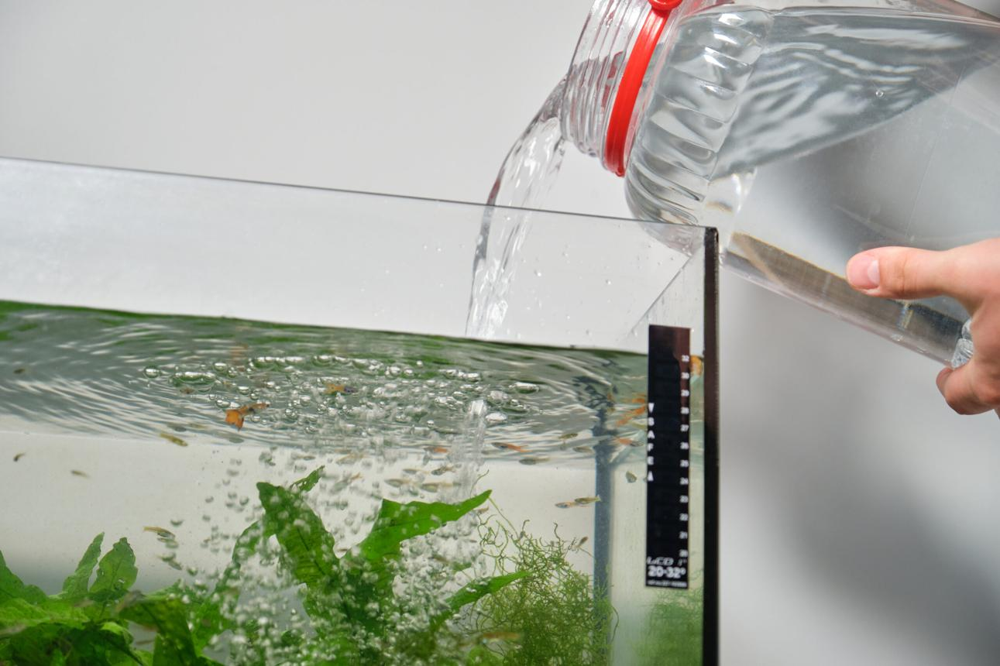
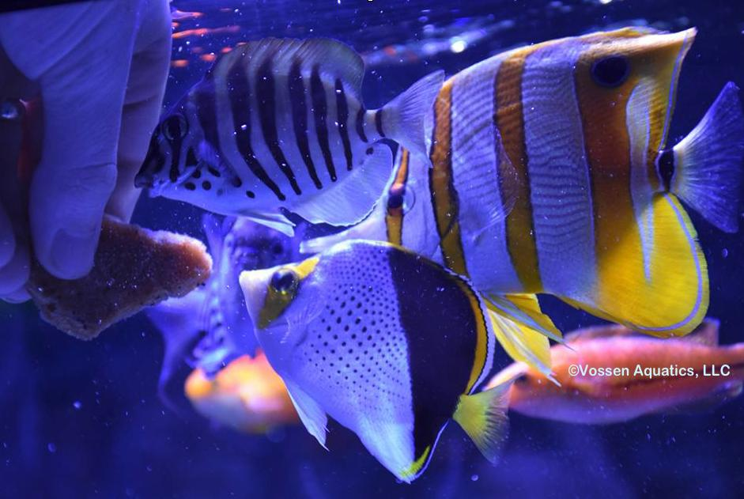
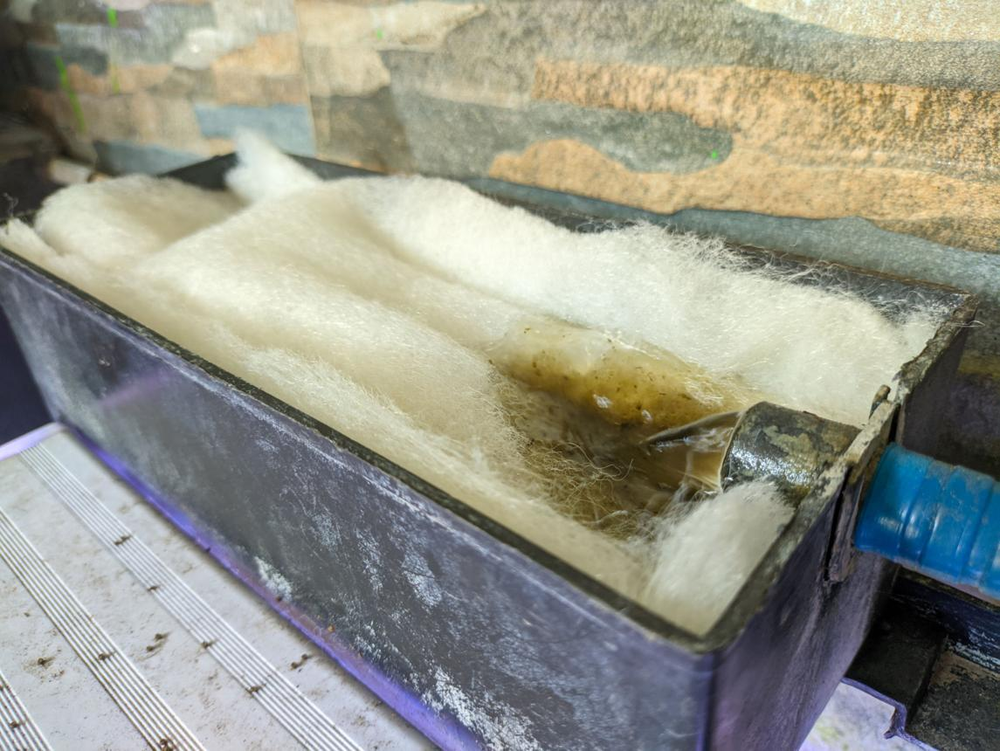
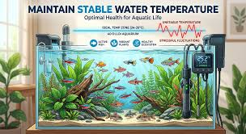
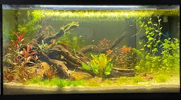
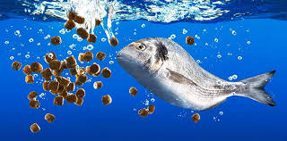
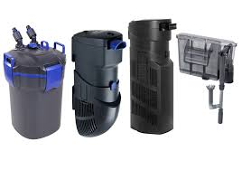
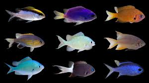

Change 20–30% water weekly

Feed small amounts twice a day in small amounts.

Clean the filter once every month.

Keep water temperature consistent (24°C–27°C) and avoid sudden changes. Stability reduces fish stress and improves survival rate.

Before adding fish, allow the tank to cycle for 2–4 weeks. This builds beneficial bacteria that keep water safe for fish.

Feed small amounts that fish can finish within 2–3 minutes. Excess food pollutes water and causes harmful bacteria growth.

A good filter keeps the water clean by removing waste and harmful chemicals. Always choose a filter suitable for your tank size and clean it regularly without killing beneficial bacteria.

Not all fish can live together peacefully. Always research temperament before mixing species. Aggressive fish should not be kept with small or peaceful community fish.